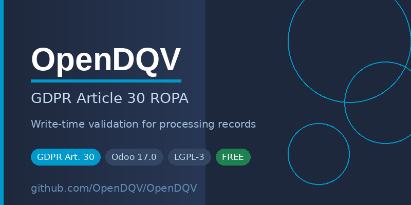

UK and EU GDPR Article 30 requires every data controller to maintain a Record of Processing Activities (ROPA). Odoo has no built-in mechanism to enforce completeness at save time.
A ROPA entry can be saved with no lawful basis, no retention period, or with consent selected but no consent mechanism recorded — silently, with no validation error. That is an ICO audit failure waiting to happen.
This module closes that gap. Every ROPA entry is validated against the
OpenDQV gdpr_processing_record contract
before it reaches the database.
| Section | Fields |
|---|---|
| Identity | Record name, controller name |
| Processing | Purpose, lawful basis, data categories, data subjects, recipients, retention period |
| Consent (conditional) | Consent mechanism, consent timestamp, withdrawal mechanism |
| Legitimate interests (conditional) | LIA completed, LIA date |
| Special category data (conditional) | Special category flag, Article 9(2) basis, data types |
| International transfers (conditional) | Transfer flag, safeguard mechanism |
| DPO audit trail | Reviewed by, review date |
ENABLE_OPENDQV_VALIDATION=true to enableopendqv is not installed, the validation step skips silently — no error, no breaking changepip install opendqv>=1.4.0 (PyPI) — required for validation enforcementENABLE_OPENDQV_VALIDATION=true in your Odoo environmentOpenDQV is open source (MIT). Source and documentation: github.com/OpenDQV/OpenDQV